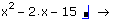
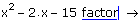
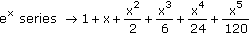
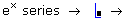
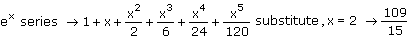
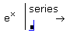
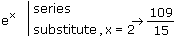
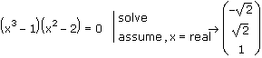

Using Keywords for Symbolic Operations |
When you evaluate an expression with the symbolic equal sign, Mathcad simplifies the result by performing arithmetic and combining like variables.
2x + 5 + 4x − 3 → 6·x + 2
To perform more complex symbolic operations, you can insert a keyword that specifies the operation before the symbolic equal sign. This section explains how to use keywords, and covers the following topics:
| Inserting a Keyword |
The following example illustrates how to insert a keyword to perform a symbolic operation. Suppose you want to factor the polynomial x2 − 2x + 15. To do so, type the polynomial and insert the keyword "factor" as follows:
Click anywhere in the expression for the polynomial.
Press [Ctrl] [Shift] [.] to insert a placeholder for the keyword, followed by the symbolic equal sign.

Type the keyword "factor" in the placeholder.

Press [Enter] or click outside the region.
x2 − 2x − 15 factor → (x + 3)·(x − 5)
Note: As an alternative to pressing [Ctrl] [Shift] [.] and typing "factor," you can select factor from the Symbolic toolbar.
| Using Keywords with Variables that Have Assigned Values |
When you apply a keyword to an expression containing a variable that has an assigned value, Mathcad first replaces the variable with its value and then applies the keyword. In the preceding example, if you assign the value x:= 7 before applying "factor," you get the following result:
x:= 7
x2 − 2x − 15 factor → 22·5
In this case, Mathcad substitutes 7 for x in the polynomial and evaluates it to get 20, and then factors the integer 20 into prime factors.
If you do not want Mathcad to substitute the assigned value of a variable before applying the keyword, you can either type x:= x to clear the symbolic value of x (see Clearing the Symbolic Value of a Variable), or use the keyword "explicit" to temporarily suppress the value of the variable.
| Using Multiple Keywords |
Some problems require you to use more than one keyword. For example, to expand the function ex in a Taylor series and then substitute the value x = 2, use the keywords "series" and "substitute" as follows:
Press [Enter] to see the result of the keyword "series."


In the placeholder, type "substitute, x=2" and press [Enter].

The result is the same as what you would get by copying and pasting the result after "series" to a new line, and then applying the "substitute, x = 2" command in the second line.
| Stacking Keywords |
Another way to combine keywords is stack them vertically before a single symbolic evaluation. To stack the keywords "series" and "substitute" in the preceding example, repeat steps 1 and 2 above, and then do the following:


Note: Stacking keywords does not always return the same result as evaluating them in a sequence. When you want the second keyword to control the behavior of the first keyword, you should stack the keywords. In the following example, the second keyword "assume" controls the behavior of the first keyword "solve" by requiring the variable x to be real.

In this case, evaluating the keywords in a sequence would not return the correct result.
Note: When keywords are stacked, their operations are carried out in descending order. In the first example above, Mathcad first expands the function as a series and then substitutes x = 2.
| Displaying Keywords |
You can choose to hide keywords or the entire left-hand side of an expression. Right click on the keywords or the left-hand expression and choose Hide keywords or Hide left-hand side. Click outside the region to see the new display. Uncheck these options to make the expressions and keywords visible again.
You can also change the display of the symbolic evaluation symbol to an equals sign.
| List of Keywords and Their Descriptions |
The following lists the keywords and the operations they perform:
| Keyword | Description |
| assume | Make assumptions about the domain of the variables. |
| coeffs | Return the coefficients of a polynomial. |
| collect | Collect terms containing like powers of a variable. |
| combine | Combine terms in an expression using properties of elementary functions. |
| confrac | Calculate the continued fraction expansion of a number or function. |
| expand | Multiply powers and products from an expression. |
| explicit | Return expressions with the values of variables substituted in place, but without reducing numerical expressions. |
| factor | Factor an expression. |
| float | Return results with available numeric values reduced using floating point calculations to the specified precision. |
| parfrac | Expand a rational expression into a sum of fractions with linear or quadratic denominators. |
| rectangular | Return results involving complex numbers separated into real and imaginary parts. |
| rewrite | Rewrite expressions in terms of elementary functions. |
| series | Expand a function or expression in a Taylor or Laurent series around 0. |
| simplify | Algebraically simplify or evaluate an expression. |
| solve | Solve an equation symbolically. |
| substitute | Replace all occurrences of a variable with another variable, an expression, or a number. |
| transforms: fourier, laplace, and z |
Evaluate the transform or inverse transform of a function. |
| Modifiers |
Modifiers are special terms that you can use to modify the behavior of keywords. For example, you can use the modifier "real" after the keyword "assume" to require that a variable be a real number:
assume, x = real
To see which modifiers you can use with a specific keyword, see the Help page for the keyword. For a complete list of the modifiers, see Modifiers.
You can use the Modifier Toolbar to insert modifiers.